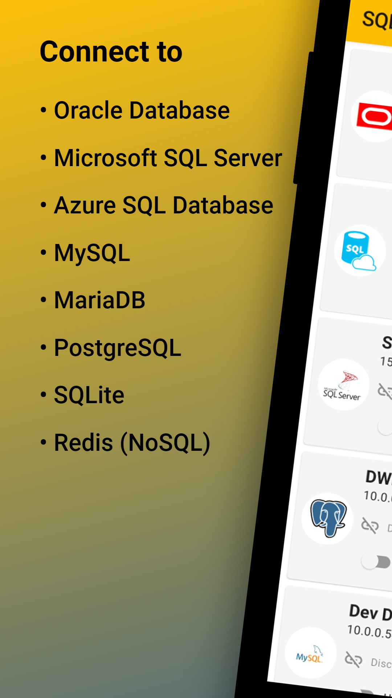
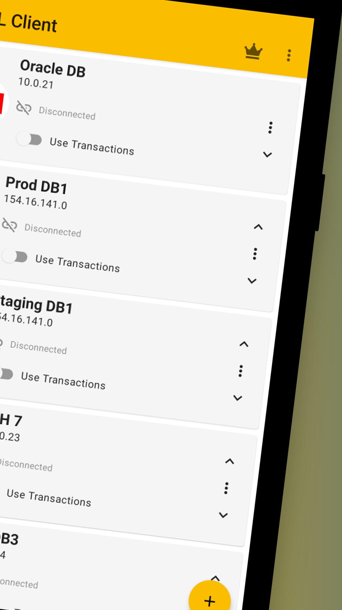
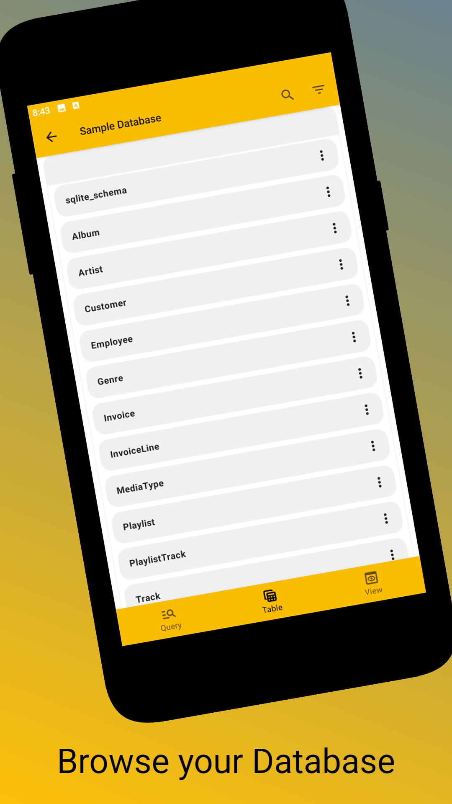
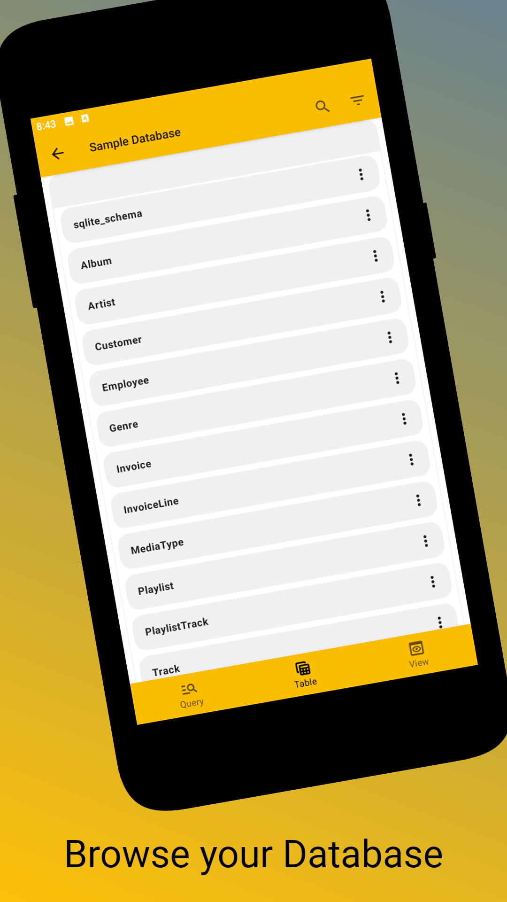
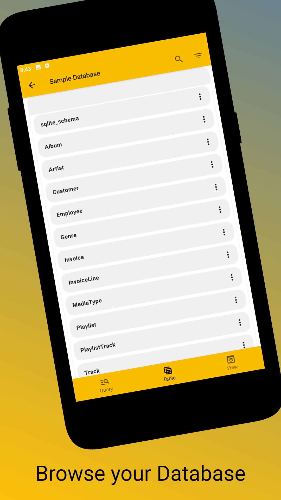

SQL Client



 


Connect effortlessly to a variety of SQL database servers or open local database files. The following vendors are supported:
- Oracle Database
- Microsoft SQL Server
- Microsoft Azure SQL Database
- MySQL
- PostgreSQL
- Microsoft Access
- MariaDB
- SQLite
- Redis (NoSQL)
With SQL Client, you can run any SQL statement (Queries, DDL, DML, DCL) supported by your database system and instantly view the results. Enjoy features like code snippets, syntax highlighting, and undo/redo functionality, empowering you to compose SQL statements efficiently.
But here's where it gets even better: Say goodbye to the hassle of manually crafting SQL code to edit your data. SQL Client enables you to modify values directly within tables, insert new rows, and delete existing ones without touching a single line of SQL code.
Here's what you can expect from our app:
- Execute and save SQL statements effortlessly
- Insert code snippets for common operations like Select, Join, Update, Alert, Insert, and many more with just a click.
- Enjoy syntax highlighting for enhanced readability.
- Undo and redo changes seamlessly in the SQL editor.
- Directly edit cells, insert rows, or delete rows without writing a single line of SQL code
- Browse, search, and view data from all tables and views within your database.
- Export data conveniently as JSON or CSV files.
- Securely store connection passwords using state-of-the-art encryption and authenticate with your fingerprint.
- Protect app start-up with fingerprint authentication.
- Utilize SQL transactions to batch changes, enabling easy commit or rollback of multiple modifications.
- Simplify database management by deleting tables and views effortlessly with the click of a button.
- Use SSH or SSL to securely connect to your database.
Experience a smoother, more efficient way to interact with your SQL databases with SQL Client.